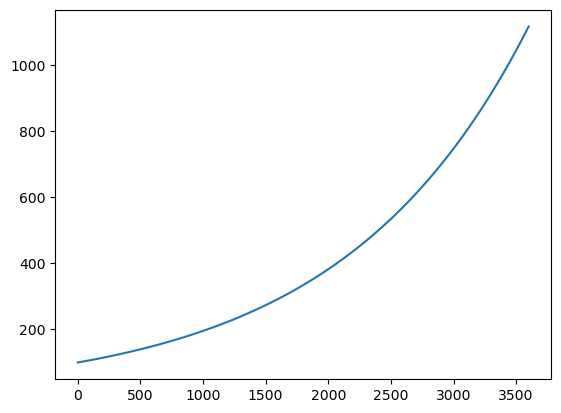
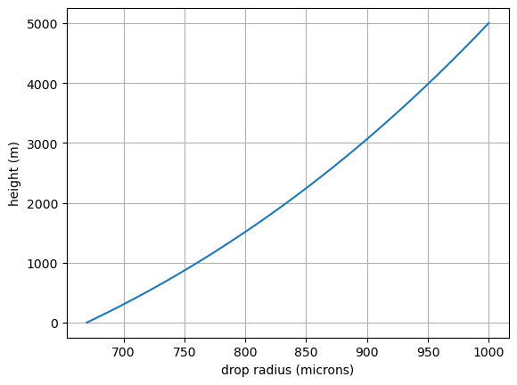

Assignment 8 – precipitation solution#
Downlad link for assignment8_precipitation_solution.ipynb
Problem 1 – Cloud Condensation Nuclei Counter#
Solution: Worksheet 10 CCNC Problem solution
Precipitation problems#
For problem 2: First solve analytically then then check that solution with python using odeint. In your notebook compare your analytic equation with the numerical solution. Do the same for problem 4, using the analytic equation from problem 3.
Problem 2 - Thompkins#
A drop with an initial radius of 100 µm falls through a cloud containing 100 droplets per cubic centimeter that it collects in a continuous manner with a collection efficiency of 0.800. If all the cloud droplets have a radius of 10 µm, how long will it take for the drop to reach a radius of 1 mm? You may assume that for the drops of the size considered in this problem the terminal fall speed v (in \(m s^{-1}\)) of a drop of radius r (in meters) is given by \(v= 8 x 10^3\;r\). Assume that the cloud droplets are stationary and that the updraft velocity in the cloud is negligible. Hint: Integrate Thompkins equation 4.28 analytically – you can also check numerically with python
Problem 2 Analytic solution#
Equation 4.30 (be sure you can derive this):
where \(R\) is the radius of the collector drop in meters, \(L\) is the liquid water content in \(kg\,m^{-3}\), \(\rho_l\) is the density of liquid water in \(kg\,m^{-3}\), \(V=8000R\) is the differential fall speed in m/s, \(\epsilon=1\) is the coalescence efficiency and \(E=0.8\) is the collection efficiency.
For the \(L\), we have 100 droplets \(cm^{-3}\) with \(\overline{r }= 10^{-3}\) cm, which gives a lwc of \(4 \times 10^{-4} \ kg\,m^{-3}\), calculated in the cell below:
Calculate the lwc#
from a405.thermo.constants import constants as c
import numpy as np
N=100e6 # number/m^3
r = 1.e-5 #meters
L = c.rhol*4./3.*np.pi*N*r**3.
print(f"liquid water content lwc: {L:6.2g} kg/m^3")
liquid water content lwc: 0.00042 kg/m^3
Get the coefficient#
Taking E=0.8 and \(V=8000\;R\) cm/s, with R in cm, (20) becomes:
where the numbers are calculated in the cell below:
lhs = 4.2e-4*8000*0.8/(4*1000)
print(f"{lhs=:.1e}")
lhs=6.7e-04
Integrate both sides#
the_time = (np.log(1000) - np.log(100))/6.7e-4
print(f"growth time is {the_time:.1f} seconds")
the_minutes = the_time/60.
print(f"growth time is {the_minutes:.1f} minutes")
growth time is 3436.7 seconds
growth time is 57.3 minutes
Problem 2 odeint solution#
from scipy.integrate import odeint
import pandas as pd
from matplotlib import pyplot as plt
def find_deriv(the_var,the_time):
dr_dt = 6.7e-4*the_var
return dr_dt
R0 = 100
the_time = np.linspace(0,3600)
sol = odeint(find_deriv,R0, the_time)
df_output = pd.DataFrame.from_records(sol,columns = ['R'])
df_output['time'] = the_time
fig, ax = plt.subplots(1,1)
ax.plot('time','R',data = df_output);

Problem 3 – Wallace and Hobbs problem 6.21 – updraft#
Derive an expression for the height h above cloud base of a droplet at time t that is growing by condensatyion only in a cloud with a steady updraft velocity w and supersaturation S.
That is – integrate
where h is the height, w is the updraft speed and \(\nu\) is the terminal droplet fall speed Use WH equation 6.24 for the terminal fall speed of a droplet together with WH eq 6.21 for the approximate droplet growth rate
Problem 3 answer#
write the supersaturation as \(SS = (S - 1)\)
Integrate (23) from \((t^\prime=0,r^\prime=r_0)\) to \((t^\prime=t,r^\prime = r)\)
Write
Insert (24) into (25) and then use (21)
So if the fall speed was larger than the updraft speed, we could set \(h=0\) and solve the quadratic equation for time \(t\) when drop hits the ground.
We would also need a value for the dynamic viscosity \(\eta\) for example from this website, which says that at 0 deg C, \(\eta=19.8 \times 10^{-6}\ Pa\,s\)
Check values of \(G_l\)#
Do a numerical check on \(G_l\)
Thompkins 4.25
where
\(D\) = \(2.2 \times 10^{-5}\) \(m^2\,s^{-1}\) at 0 deg C
\(R_v\) = 461.5 \(J\,kg^{-1}\,K^{-1}\)
\(\rho_l\) = 1000 \(kg\,m^{-3}\)
\(e_s^\infty\) = 611 \(Pa\) at 0 deg C
\(T\) = 273.15 K
Numerical value for \(G_l\) at 0 deg C#
Confirm \(G_l = 100\ m^2/s\) for small drops
D=2.2e-5 #m^2/s
es0 = 611 #Pa
Temp = 273.15 #K
G_l = D*es0/(c.rhol*c.Rv*Temp)
print(f"{G_l:.3g} m^s/s or {G_l*1.e12:.3g} μm^2/s at 0 deg C")
1.07e-10 m^s/s or 107 μm^2/s at 0 deg C
Which agrees with Wallace and Hobbs
Problem 4 Answer – Wallace and Hobbs problem 6.24 – falling precip#
If a raindrop has a radius of 1 mm at cloud base, which is located 5 km above the ground, what will be its radius at the ground and how long will it take to reach the ground if the relative humidity between cloud base and ground is constant at 60%? [Hint: Use (6.21) and the relationship between v and r given in Exercise 6.23. If r is in micrometers, the value of Gl in (6.21) is 100 for cloud droplets, but for the large drop sizes considered in this problem the value of Gl should be taken as 700 to allow for ventilation effects.]
Numerical solution#
For extra credit:
Make this work with v = -6000r
change fall speed to that used in analytic solution and compare
Repeat this using solve_ivp, stopping at h=0
from scipy.integrate import solve_ivp
import pandas as pd
import numpy as np
from matplotlib import pyplot as plt
def hit_ground(t, the_vars):
"""Event: when height (the_vars[0]) is zero."""
return the_vars[0]
hit_ground.terminal = True
hit_ground.direction = -1
G_l = 700e-12
S = 0.6
def find_derivs(the_time,the_vars):
"""
the_vars[0] = h (height, m)
the_vars[1] = r (radius, m)
"""
h, r = the_vars
dh_dt = -6000*r #WH prob 6.23, m
dr_dt = G_l*(S - 1)/r #WH eq. 6.21
#print(f"{r=}, {h=}, {the_time=}")
return [dh_dt,dr_dt]
init_0 = [5000,0.001] #h, r
tspan=[0,5000]
sol = solve_ivp(
find_derivs,
tspan,
init_0,
events=[hit_ground],
dense_output=True # Enable interpolation for plotting smooth curve
)
the_times = np.arange(0,sol.t[-1],1)
yplot = sol.sol(the_times)
df_output = pd.DataFrame.from_records(yplot.T,columns = ['height','radius'])
df_output['time']=the_times
df_output
| height | radius | time | |
|---|---|---|---|
| 0 | 5000.000000 | 0.001000 | 0.0 |
| 1 | 4994.000840 | 0.001000 | 1.0 |
| 2 | 4988.003361 | 0.000999 | 2.0 |
| 3 | 4982.007562 | 0.000999 | 3.0 |
| 4 | 4976.013445 | 0.000999 | 4.0 |
| ... | ... | ... | ... |
| 981 | 17.855797 | 0.000671 | 981.0 |
| 982 | 13.828672 | 0.000671 | 982.0 |
| 983 | 9.804061 | 0.000671 | 983.0 |
| 984 | 5.781965 | 0.000670 | 984.0 |
| 985 | 1.762385 | 0.000670 | 985.0 |
986 rows × 3 columns
fig, ax = plt.subplots(1,1)
ax.grid(True)
ax.plot(df_output['radius']*1.e6,df_output['height'])
ax.set_xlabel("drop radius (microns)")
ax.set_ylabel("height (m)")
Text(0, 0.5, 'height (m)')

Check this answer analytically#
Integrate (28) with change of variables#
Put in some numbers#
Gl = 7.e-10
r0 = 0.001
SS = -0.4
time = 985.
r0=0.001
h0=5000.
u=r0**2. + 2*Gl*SS*time
h = h0 -2000/(Gl*SS)*(u**1.5 - r0**3.)
print(f"final analytic height at {time=} seconds in {h=:.1f} m")
final analytic height at time=985.0 seconds in h=1.9 m
Repeat numerical solution using fall speed from (22)#
eta = 19.8e-6
beta = 2*c.g0*c.rhol/(9.*eta)
def find_derivs(the_time,the_vars):
"""
the_vars[0] = h (height, m)
the_vars[1] = r (radius, m)
"""
h, r = the_vars
dh_dt = -beta*r**2. #WH eq. 6.24
dr_dt = G_l*(S - 1)/r #WH eq. 6.21
#print(f"{r=}, {h=}, {the_time=}")
return [dh_dt,dr_dt]
init_0 = [5000,0.001] #h, r
tspan=[0,5000]
sol = solve_ivp(
find_derivs,
tspan,
init_0,
events=[hit_ground],
dense_output=True # Enable interpolation for plotting smooth curve
)
the_times = np.arange(0,sol.t[-1],1)
yplot = sol.sol(the_times)
df_output = pd.DataFrame.from_records(yplot.T,columns = ['height','radius'])
df_output['time']=the_times
df_output
| height | radius | time | |
|---|---|---|---|
| 0 | 5000.000000 | 0.001000 | 0.0 |
| 1 | 4890.042020 | 0.001000 | 1.0 |
| 2 | 4780.145634 | 0.000999 | 2.0 |
| 3 | 4670.310842 | 0.000999 | 3.0 |
| 4 | 4560.537643 | 0.000999 | 4.0 |
| 5 | 4450.826038 | 0.000999 | 5.0 |
| 6 | 4341.176027 | 0.000998 | 6.0 |
| 7 | 4231.587609 | 0.000998 | 7.0 |
| 8 | 4122.060786 | 0.000998 | 8.0 |
| 9 | 4012.595556 | 0.000997 | 9.0 |
| 10 | 3903.191919 | 0.000997 | 10.0 |
| 11 | 3793.849877 | 0.000997 | 11.0 |
| 12 | 3684.569428 | 0.000997 | 12.0 |
| 13 | 3575.350572 | 0.000996 | 13.0 |
| 14 | 3466.193311 | 0.000996 | 14.0 |
| 15 | 3357.097643 | 0.000996 | 15.0 |
| 16 | 3248.063569 | 0.000996 | 16.0 |
| 17 | 3139.091089 | 0.000995 | 17.0 |
| 18 | 3030.180202 | 0.000995 | 18.0 |
| 19 | 2921.330909 | 0.000995 | 19.0 |
| 20 | 2812.543210 | 0.000994 | 20.0 |
| 21 | 2703.817104 | 0.000994 | 21.0 |
| 22 | 2595.152593 | 0.000994 | 22.0 |
| 23 | 2486.549675 | 0.000994 | 23.0 |
| 24 | 2378.008350 | 0.000993 | 24.0 |
| 25 | 2269.528620 | 0.000993 | 25.0 |
| 26 | 2161.110483 | 0.000993 | 26.0 |
| 27 | 2052.753939 | 0.000992 | 27.0 |
| 28 | 1944.458989 | 0.000992 | 28.0 |
| 29 | 1836.225632 | 0.000992 | 29.0 |
| 30 | 1728.053869 | 0.000992 | 30.0 |
| 31 | 1619.943699 | 0.000991 | 31.0 |
| 32 | 1511.895122 | 0.000991 | 32.0 |
| 33 | 1403.908139 | 0.000991 | 33.0 |
| 34 | 1295.982749 | 0.000990 | 34.0 |
| 35 | 1188.118953 | 0.000990 | 35.0 |
| 36 | 1080.316751 | 0.000990 | 36.0 |
| 37 | 972.576141 | 0.000990 | 37.0 |
| 38 | 864.897125 | 0.000989 | 38.0 |
| 39 | 757.279703 | 0.000989 | 39.0 |
| 40 | 649.723874 | 0.000989 | 40.0 |
| 41 | 542.229639 | 0.000988 | 41.0 |
| 42 | 434.796997 | 0.000988 | 42.0 |
| 43 | 327.425949 | 0.000988 | 43.0 |
| 44 | 220.116494 | 0.000988 | 44.0 |
| 45 | 112.868632 | 0.000987 | 45.0 |
| 46 | 5.682365 | 0.000987 | 46.0 |
Compare with the analytic result from (26)
time = 46
r0 = 0.001
h0=5000
Gl = 7.e-10
SS = -0.4
h = h0 - beta*r0**2.*time - beta*Gl*SS*time**2
print(f"final analytic height at {time=} seconds in {h=:.1f} m")
final analytic height at time=46 seconds in h=5.7 m
Again, a close match. Note how much difference the slower fall that includes drag makes on the answer.